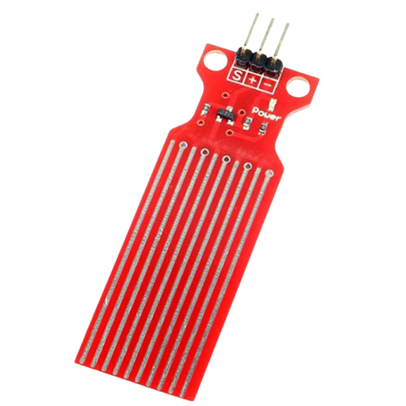

Water_detector
The Water in Fuel Sensor or WiF sensor indicates the presence of water in the fuel. It is installed in the fuel filter and when the water level in the water separator reaches the warning level, the Wif sends an electrical signal to the ECU or to dashboard (lamp).
12,5DH